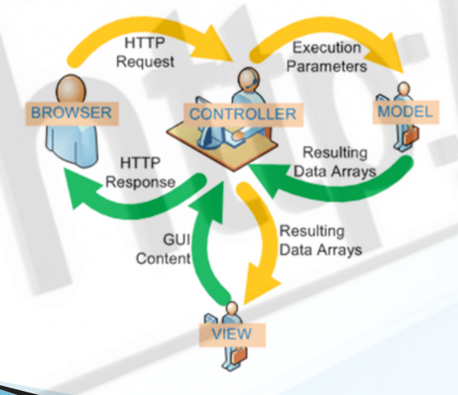
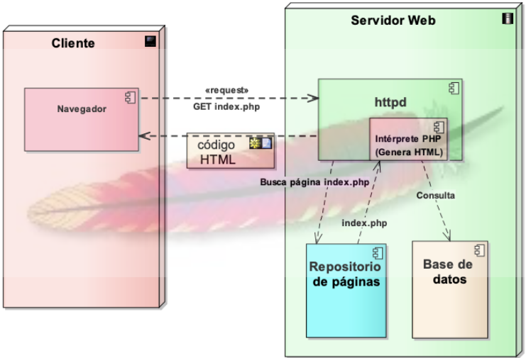

¿Qué es HTTP?
HTTP (Hypertext Transfer Protocol) es un protocolo de comunicación entre un cliente y un servidor. Su principal propósito es la transferencia de información.
 T1 - GIT
T2 - DNS/HTTPS
T3 - LOCKED
T4 - LOCKED
T5 - LOCKED
T6 - LOCKED
T1 - GIT
T2 - DNS/HTTPS
T3 - LOCKED
T4 - LOCKED
T5 - LOCKED
T6 - LOCKED

HTTP (Hypertext Transfer Protocol) es un protocolo de comunicación entre un cliente y un servidor. Su principal propósito es la transferencia de información.
DNS (Domain Name Server) es un sistema que permite traducir nombres de dominio a direcciones IP, de forma que los usuarios pueden acceder a los servicios de red mediante nombres haciendolos más fáciles de recordar.
Esquema del funcionamiento del protocolo HTTP:
Solicita información y la interpreta
Renderiza en pantalla el resultado
Interactúa con el usuario
Sirve contenido estático
Ejecuta programas para generar contenido dinámico (PHP)
Certificados SSL/TLS
Estructura de una aplicación web:
Se usa para solicitar información al servidor sin modificar los datos en el servidor.
Se usa para enviar información al servidor y modificar los datos en el servidor.
Es el protocolo de transferencia sin cifrado, esto es un problema de seguridad ya que en esta conexion los datos están expuestos.
Es el protocolo de transferencia con cifrado, esto es una solución al problema de seguridad de HTTP. Se necesita un certificado SSL/TLS para poder usar HTTPS.
Normalmente en nuestros clientes tenemos una ip la cual es la ip de nuestro servidor DNS, esta ip suele ser la que nos dan nuestros ISP, pero también podemos configurarla manualmente.
Cuando un cliente quiere acceder a un recurso web por ejemplo www.google.com. Sucede estos pasos en los servidores DNS:
Los registros DNS son los encargados de traducir los nombres de dominio a direcciones IP. Estos registros se dividen en diferentes tipos:
Resolución directa: Traduce nombres de dominio a direcciones IP.
Resolución inversa: Traduce direcciones IP a nombres de dominio.
Estructura de un servidor Apache:
Apache tiene unos contextos de configuracion que se heredan heredan que se aplican en diferentes niveles:
En este contexto se definen las directivas que afectan a todo el servidor.
En este contexto se definen las directivas que afectan a un host virtual (aplicacion web).
En este contexto se definen las directivas que afectan a un directorio en concreto.
Nota: Los contextos se heredan, es decir, si se define una directiva en un contexto superior, se aplicará en los contextos inferiores
Para mantener una buena organización en la configuración de Apache es recomendable seguir estas buenas prácticas:
Para consultar las directivas disponibles y cuales son sus valores disponemos de la página oficial de Apache: Directivas httpd apache oficial site
La esctructura de carpetas de Apache es muy importante para la configuracion del resto
/etc/apache2
/etc/apache2/sites-available
/var/www